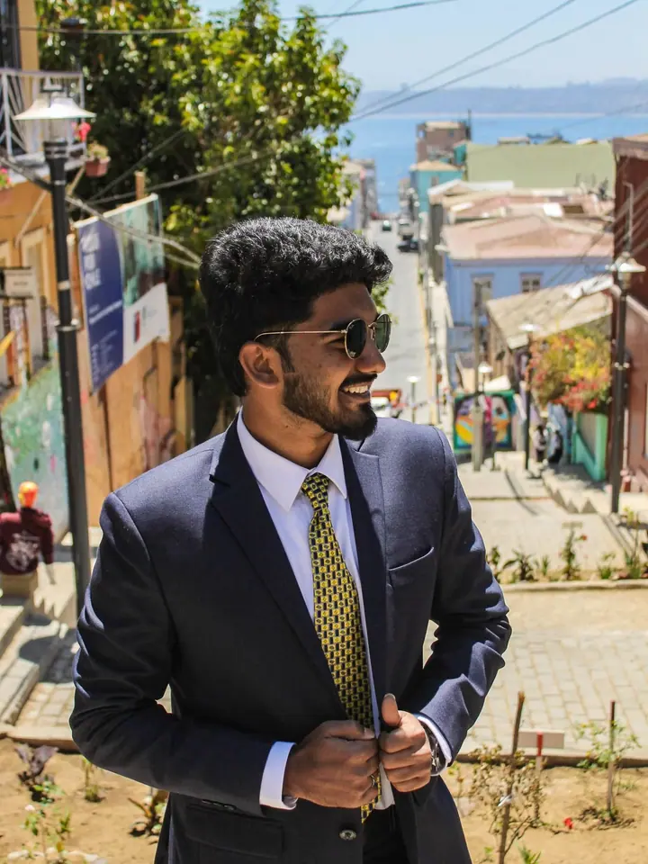
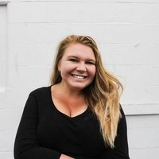

01 / 04
Vizuály pro značky
Postarám se o veškeré vizuály vaší značky, od loga přes fotky až po video. Všechno v jednom rukopisu a bez domlouvání s několika různými lidmi.
Zeptat se na termín→


Kreativní agentura v jedné osobě
Zeptat se na termín →(01) Ahoj
Jmenuji se Veronika Koníčková a tvořím vizuální obsah: fotky , videa i grafiku . Působím jako freelancerka v Praze, kde mám ve Vršovicích vlastní ateliér. Za vaším projektem ale ráda vyrazím kamkoliv.
(02) Co dělám
01 / 04
Postarám se o veškeré vizuály vaší značky, od loga přes fotky až po video. Všechno v jednom rukopisu a bez domlouvání s několika různými lidmi.
Zeptat se na termín→02 / 04
Portréty v ateliéru ve Vršovicích i venku. Poradím s místem, pózou i výrazem, ať se před objektivem cítíte dobře.
Zeptat se na termín→03 / 04
Fotím konference, přednášky i firemní akce. Hotové fotky posílám rychle, abyste je mohli hned použít.
Zeptat se na termín→Dále nabízím
Natáčím a stříhám videa pro web i sociální sítě. Při natáčení ráda přijdu s vlastními nápady.
↗(04) Postup
Od první zprávy po hotovou galerii.
Krok 1 z 4
Pošlete pár vět o svém projektu přes formulář nebo zavolejte. Komunikuji rychle a věcně.
Krok 2 z 4
Společně ujasníme, co potřebujete: fotky, video, grafiku, nebo všechno dohromady. Poradím, co bude dávat smysl.
Krok 3 z 4
Domluvíme termín a místo, ať už v mém ateliéru ve Vršovicích, u vás, nebo kdekoliv jinde. Na místě pomůžu s pózou i výrazem.
Krok 4 z 4
Materiály pečlivě upravím a pošlu vám je co nejdřív, abyste nemuseli dlouho čekat.

Váš vizuální příběh, od loga po foto a video.

(05) Za objektivem
Jsem tvůrkyně vizuálního obsahu a postarám se o všechno od fotek přes videa až po grafiku. Ráda o sobě říkám, že jsem renesanční člověk multimediální doby. Pro vás to znamená jednoho člověka, jeden rukopis a žádné složité domlouvání s několika lidmi.
K focení jsem se dostala přes dvě vysoké školy najednou. Na Univerzitě Karlově jsem studovala marketingovou komunikaci a mediální studia, na VŠE multimédia v ekonomické praxi a management. Díky tomu nefotím jen hezké obrázky, ale přemýšlím i nad tím, co mají vaší značce přinést.
Mým srdcovým projektem je Speciální olympiáda Česká republika, která se věnuje sportovcům s mentálním hendikepem. Jsem její prezidentkou, tvořím pro ni vizuální obsah a koordinuji marketing a komunikaci. A když zrovna netvořím, cestuji, protože to je moje vášeň.

Veronika
Veronika Koníčková · Fotografka, videotvůrkyně a grafička
Ano, to je přesně to, co dělám. Od loga přes fotky až po video, všechno v jednom rukopisu a s jedním člověkem na komunikaci.
Mám vlastní ateliér v Praze 10 ve Vršovicích. Ráda ale přijedu i za vámi, za hranice Prahy i Česka.
Určitě. Poradím s místem, pózou i výrazem, takže se nemusíte ničeho bát.
Záleží na rozsahu zakázky. Snažím se vždy dodat co nejrychleji a přesný termín si domluvíme předem.
(07) Kontakt
Napište pár vět o tom, co si představujete, a termín, který se vám hodí.